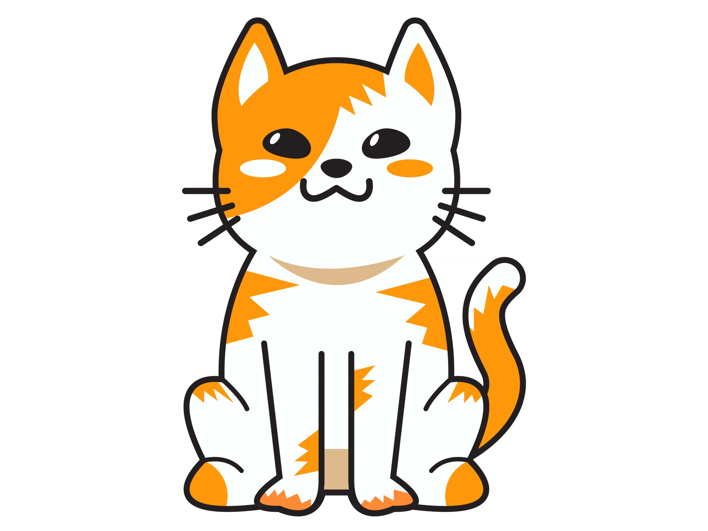
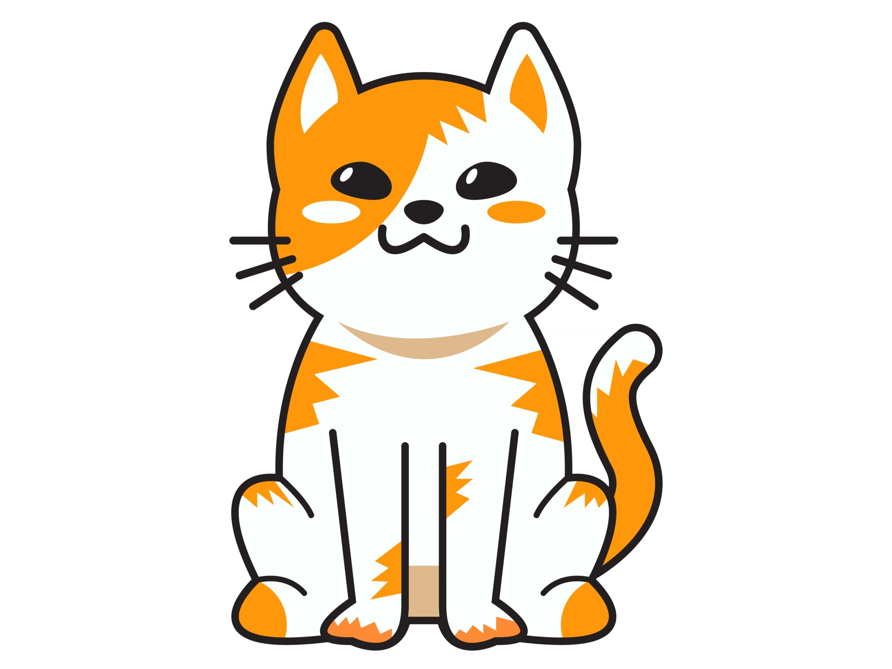

The animation-direction property specifies whether an animation should be played forwards, backwards or in alternate cycles. The following example uses the value "alternate-reverse" to make the animation run backwards first, then forwards:
 
